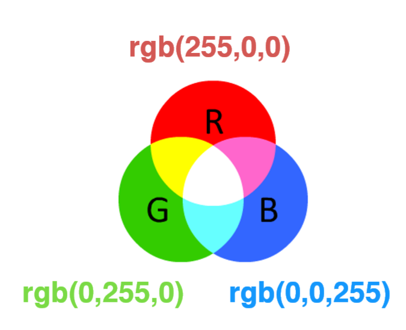
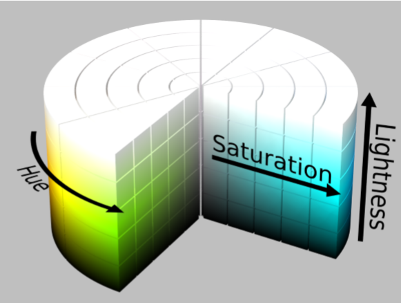
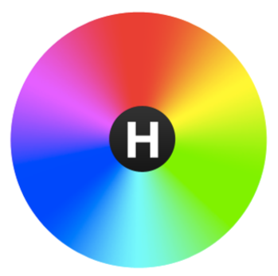

SVG的颜色、渐变和图案
1. RGB和HSL
都是CSS3支持的颜色表示方法，但是RGB较为常用。
1.1. RGB
红色、绿色、蓝色三个分量
表示方式rgb(r, g, b)或#rrggbb
每个分量取值范围：[0, 255]，rgb(255,0,0)，rgb(0,255,0) ，rgb(0,0,255)
优势：显示器容易解析。有硬件知识的人应该知道，现代科技中的显示屏大多是以红、绿、蓝三种颜色为原色，通过不同分量的亮度变化来实现显示颜色的变化，所以rgb颜色表示法相对容易被解析。
劣势：不符合人类描述颜色的习惯。我们很难从一个颜色中得知它对照的三分量的rgb是怎么样的。所以在一些颜色动态淡化、变暗、偏色等场景中，使用rgb表示法的颜色处理起来就显得比较艰辛。

1.2 HSL
- hsl表示法同样拥有三个分量，但它门分别表示颜色(h)、饱和度(s)和亮度(l)。
- 格式：hsl(h, s%, l%)
- 取值范围：h: [0, 359]；s, l: [0,100]
- 优势：符合人类描述颜色的习惯
hsl把颜色描述在圆柱坐标系内的点，这个圆柱的中心轴取值为自底部的黑色到顶部的白色而在它们中间的是灰色，点绕这个轴的角度对应于“颜色”，到这个轴的距离对应于“饱和度”，而沿着这个轴的高度对应于“亮度”。

从红色开始按逆时针方向计算，红色为0°，绿色为120°,蓝色为240°。

而当l值为100时，颜色显示为白色，无论如何改变h、s，白色都不会变化。当s值为0是。则当前色为黑色，同样无论如何改变h、s都不会对黑色造成影响。
相对于rbg表示法，hsl在处理颜色动态淡化、变暗、偏色等场景就比较简单些。例如要使得正红hsl(0, 100%, 50%)颜色变淡，我们只需要改变s值即可实现，正红hsl(0, 40%, 50%)。
1.3 透明度
- rgba(r, g, b, a)和hsla(h, s%, l%, a)表示带透明度的颜色，a的取值范围为[0, 1]。
2. 线性渐变和径向渐变
渐变效果能够使得图形更丰富。
2.1 线性渐变
线性渐变沿着直线改变颜色，要插入一个线性渐变，需要在SVG文件的defs元素内部，创建一个<linearGradient> 节点。如下：
<svg xmlns="http://www.w3.org/2000/svg">
<defs>
<linearGradient id="grad1" x1="0" y1="0" x2="1" y2="1">
<stop class="stop1" offset="0" stop-color="#1497fc"/>
<stop class="stop2" offset="0.5" stop-color="#a469be"/>
<stop class="stop3" offset="1" stop-color="#ff8c00"/>
</linearGradient>
</defs>
<rect fill="url(#grad1)" width="200" height="150"/>
</svg>
上面的代码实现了一个拥有从左上到右下颜色渐变效果的矩形。我们对上面的代码进行分析，首先在<defs>标签内定义了一个<linearGradient>标签，赋予id=”grad1”（注意：在<defs>标签内定义的标签，可以通过唯一值id进行复用，如果是效果元素，像上面的渐变效果，url(#id)的形式复用，如果是图形元素，如<rect>，则需要借用<use>标签进行复用，如<use xlink:href=”#rect” />），并且另有x1、y1、x2、y2四个属性，其中x1、y1定义渐变的起点，x2、y2定义渐变的终点，也就是确定了渐变方向。默认情况下x、y的取值范围为[0, 1]，表示所占图形x轴或者y轴的比例，所以x1=0、y1=0表示图形的左上角，x2=1、y2=1表示图形的右下角。其次，<linearGradient>标签中有三个<stop>节点，这些结点通过指定位置的offset（偏移）属性和stop-color（颜色中值）属性来说明在渐变的特定位置上应该是什么颜色。例如class="stop1"这个节点表示在渐变开始的位置指定颜色为#1497fc。最后，在<rect>标签的fill属性上应用了该线性渐变。除了fill属性，还能在stroke属性上应用。
2.2 径向渐变
径向渐变与线性渐变相似，只是它是从一个点开始发散绘制渐变。创建径向渐变需要在文档的defs中添加一个<radialGradient>元素，如下：
<svg xmlns="http://www.w3.org/2000/svg">
<defs>
<radialGradient id="grad2" cx="0.5" cy="0.5" r="0.5" fx="0.5" fy="0.3">
<stop class="stop1" offset="0" stop-color="#1497fc"/>
<stop class="stop2" offset="0.5" stop-color="#a469be"/>
<stop class="stop3" offset="1" stop-color="#ff8c00"/>
</radialGradient>
</defs>
<rect fill="url(#grad2)" width="200" height="150"/>
</svg>
上面的代码实现了一个拥有从内而外颜色渐变效果的矩形。分析一下源代码，首先在<defs>标签中定义了一个<radialGradient>标签，赋予id=”grad2”，并且有cx、cy、r、fx、fy五个属性，其中cx、cy定义了渐变的起点，r表示渐变区域的大小，三者共同定义了渐变的位置；fx、fy表示渐变的焦点，cx、cy、r描述了渐变边缘与位置，而fx、fy则描述了渐变的中点。五个属性值的意义与线性渐变的x1、y1、x2、y2一样，都是比例值。<stop>节点与线性渐变的一个意义。同样地，径向渐变也能像线性渐变那样应用在fill属性和stroke属性中。
2.3 渐变单元
两种渐变都有一个叫做 gradientUnits（渐变单元）的属性，它描述了用来描述渐变的大小和方向的单元系统。该属性有两个值：userSpaceOnUse 、objectBoundingBox。默认值为objectBoundingBox，我们目前看到的效果都是在这种系统下的，它以使用对象为标准，用比例来确定渐变的位置大小等值。而userSpaceOnUse则以用户坐标系为准，使用绝对单元（px、pt等），所以你必须知道对象的位置，并将渐变放在同样地位置上。
3. 使用图案
patterns（图案）是SVG中用到的最让人混淆的填充类型之一。跟渐变一样，<pattern>需要放在SVG文档的
<svg xmlns="http://www.w3.org/2000/svg">
<defs>
<pattern id="p1" x="0" y="0" width="0.25" height="0.25">
<circle cx="10" cy="10" r="5" fill="red"></circle>
<polygon points="30 10 60 50 0 50" fill="green"></polygon>
</pattern>
</defs>
<rect x="100" y="100" width="800" height="300" fill="url(#p1)" stroke="blue"/>
</svg>
在pattern元素内部你可以包含任何之前包含过的其它基本形状，并且每个形状都可以使用之前学习过的任何样式样式化，包括渐变和半透明。这里我们在pattern中绘制一个圆和一个三角形。
关于pattern容易混淆的事是，pattern定义了一个单元系统以及他们的大小。上例中，我们在pattern元素上定义了width和height属性，用于描述在重复下一个图案之前应该跨过多远。如果你想要在绘制时偏移矩形的开始点，也可以使用x和y属性，原因如下。
就像前面使用了gradientUnits属性，同样的pattern也有一个属性patternUnits用于描述我们使用的属性单元。这同之前使用的objectBoundingBox默认值一样，所以当一个值为1时，它被缩放到应用pattern对象的宽高值。因此，我们希望pattern垂直和水平的重复4次，所以宽高被设置位0.25，这一位置pattern的宽高仅为总外框大小的0.25。
与渐变不同，pattern有第二个属性patternContentUnits，它描述了pattern元素基于基本形状使用的单元系统，这个属性默认值为userSpaceOnUse，与patternUnits属性相反，这意味着除非你至少指定其中一个属性值（patternContentUnits或patternUnits），否则在pattern中绘制的形状将与pattern元素使用的坐标系不同，当你手写这部分时会容易混淆。为了使上例生效，我们必须考虑我们的边框大小和我们实际希望pattern垂直和水平重复4次的需求。这意味着每个pattern单元应该是200x75的矩形形，pattern中的两个矩形和圆形的大小会被缩放适应到一个200x75的边框里，任何我们绘制在边框外的内容都不会显示。因为我们希望pattern从边框的左上角里开始，所以pattern也必须偏移10像素，也就是pattern的x和y属性需要调整为 10/200=0.05。
如果对象改变了大小，pattern会自适应其大小，但是对象里面的内容不会自适应。所以当我们在pattern中还是放置4个重复的pattern时，组成pattern的对象将不会保持相同的大小，同时在他们之间会有大片空白区域。通过改变patternContentUnits属性，我们可以把所有的元素放到相同的单元系统中：
<pattern id="p1" x="0" y="0" width="0.25" height="0.25" patternContentUnits="objectBoundingBox">
<circle cx="0.1" cy="0.1" r="5" fill="red"></circle>
<polygon points="0.3 0.1 0.6 0.5 0 0.5" fill="green"></polygon>
</pattern>
现在，因为pattern内容与pattern本身处于相同的单元系统中，所以我们不用偏移边框以使pattern在正确的位置上开始，并且即使对象变大，pattern也会自动的缩放以保证pattern内部的对象数目和重复不变。这与userSpaceOnUse系统不同，userSpaceOnUse系统中如果对象改变大小，pattern本身会保持不变，只是重复更多次去填满边框。